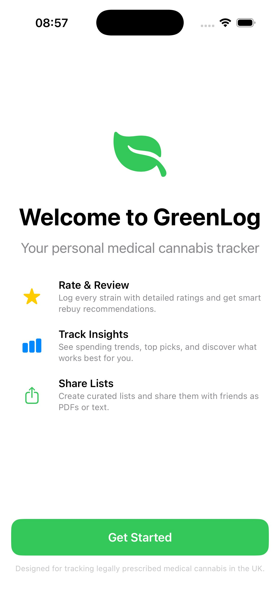
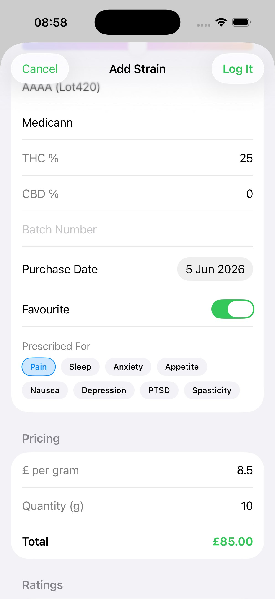
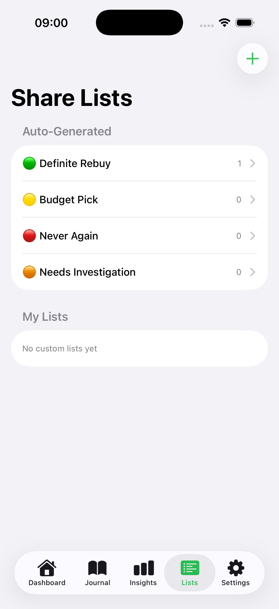
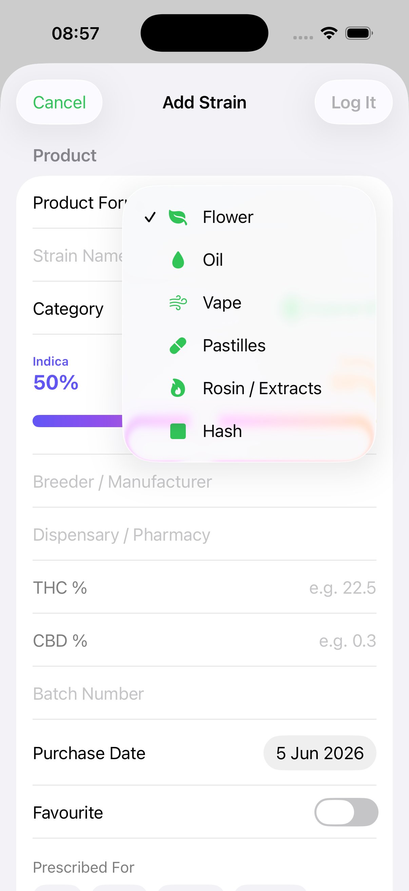
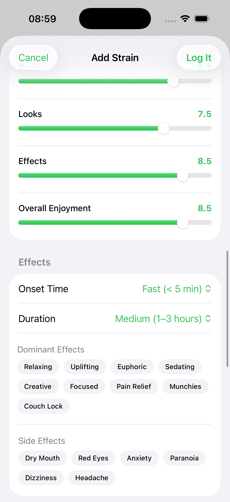
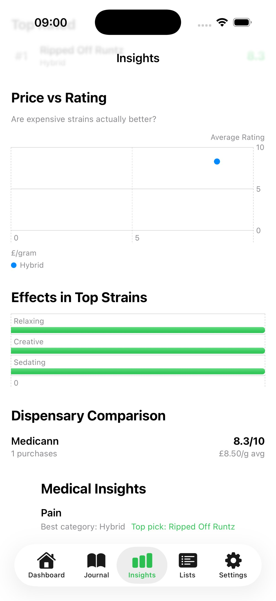
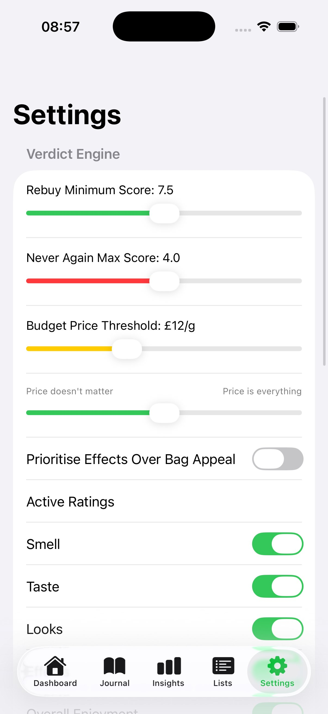

A free iOS app for UK medical cannabis patients. Log every strain, rate your experience, track spending, and build shareable recommendations — all private, all yours.



Features
Built by a UK medical cannabis patient who got tired of keeping notes in a phone app and forgetting which strains were worth reordering.
Log strain name, breeder, dispensary, THC/CBD %, batch number, product form (flower, oil, vape, hash, pastilles, rosin), and hybrid percentage splits.
Rate every strain on Smell, Taste, Looks, Effects, and Overall Enjoyment on a 1–10 scale. Tag dominant effects, side effects, onset time, and duration.
Auto-categorises every strain: Definite Rebuy, Budget Pick, Never Again, or Needs Investigation — with fully configurable thresholds and transparent reasoning.
Monthly spending charts, category breakdowns, price vs. rating analysis, dispensary comparisons, effects heatmaps, and medical condition correlations.
Create curated lists and share via iMessage, WhatsApp, or PDF. Auto-generated lists by verdict. Prices hidden by default for privacy.
Log dominant terpenes — Myrcene, Limonene, Caryophyllene, Pinene, Linalool, and more. Analytics correlate which terpene profiles you respond best to.
Know exactly what you're spending per month, per gram, per dispensary. See your average price over time and find where you're getting best value.
Same strain, different batch? Compare side-by-side with ratings, THC %, and price variance highlighted automatically.
Tag what each strain is prescribed for and discover patterns — which categories, terpenes, and THC ranges best serve each condition.
Strain Logging
From strain name and breeder to THC/CBD percentages, batch numbers, and pricing — capture everything in a clean, intuitive form. Tag what it's prescribed for, rate your experience across five categories, and note the effects you feel.


Analytics
Go beyond guesswork. See which effects appear most in your highest-rated strains. Compare dispensary value. Find out if expensive strains are actually better with the price vs. rating analysis. Medical insights surface which strain profiles best serve each condition you're treating.

Smart Verdicts
Every strain gets an automatic verdict based on your ratings and the price. The logic is fully configurable — adjust thresholds, weight price sensitivity, prioritise effects over bag appeal, or disable ratings you don't care about.
High ratings across the board. Worth every penny. Get this on your next script.
Ratings are decent. The price makes it a solid choice when the top shelf is out.
Didn't work, didn't enjoy it. Save your money and avoid next time.
Mixed signals. Could be a bad batch. Worth trying again before writing off.

Fully configurable verdict thresholds, price sensitivity, and active ratings
Privacy First
All data lives locally on your iPhone. Nothing is uploaded to external servers. No account required.
Sync across your Apple devices via your personal iCloud account. Toggle it on or off — your choice.
Export everything as JSON or CSV at any time. Your data is never locked in. Delete it all with one tap.
Beta Programme
We're looking for UK medical cannabis patients to test GreenLog via TestFlight and share honest feedback. The app is free and your data stays completely private.
DM on Reddit or comment on our post in r/ukmedicalcannabis